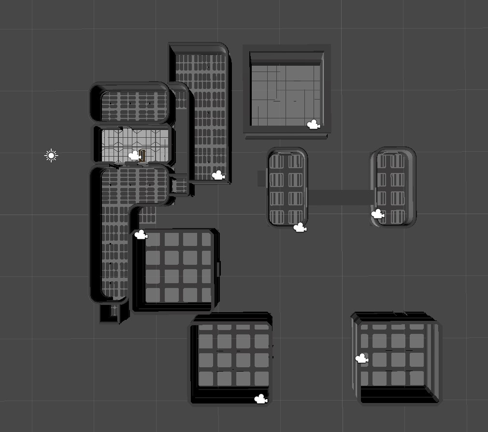
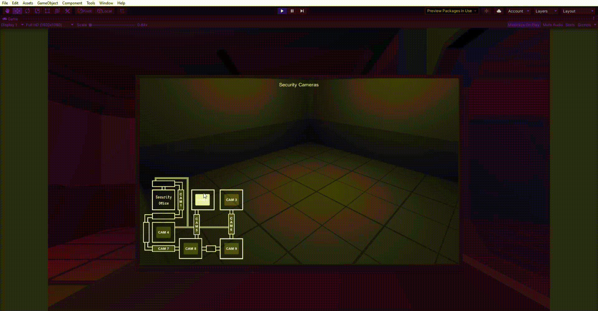

Cameras and
world-space UI
As the main interface which the player interacts with the game, the monitor acts as the HUD, Menu, and contains all the controls the player will need.
The Monitor itself is a 3d model with a World-Space UI positioned to take the place of a screen.
Once the Canvas was in place I could add elements like I would for any UI, for the map of the facility I created a transparent image in Photopea the positioned UI buttons over each location where a camera would be placed
Before I could add the camera in, I needed something for them to render, so I did some more environmental design and set up all the rooms which would be rendered on the cameras.
Though it was not necessary to position each room based on their actual location as the player will never travel between them, i found that this helped to visualize the space and design the rooms accordingly, there are also less rooms than on the layout due to some rooms being designated as “Audio only” thus can be represented with a black screen
Once the rooms were finished, I created a camera object for each once and went about deciding how each room should appear on the screen.
Instead of switching the main camera perspective to each room, I wanted the security camera’s perspective to render onto the monitor, to do this i needed to set up a Render Texture and tie it to a specific camera, In the end i created a render texture for each camera, enabling and disabling the layers depending which was active, an alternative method could have been to programmatically switch the target camera on the render texture but the current method works fine and has a minimal performance impact as the camera is not rendering anything when it is disabled
Lastly I connected the buttons up to a SwitchActiveCamera(string camera) function that would disable all render textures then enable the one called by the button.
